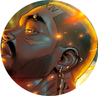

Minhas redes sociais
Quem sou eu?
Humanos são legais… Mas os kimyos são bem melhores. Kimyo: Um humano nascido com uma habilidade extraordinária que ultrapassa a evolução natura
.Che é apenas um humano normal em um mundo cheio de "Kimyos" superpoderosos, mas ele está determinado a se tornar o maior lutador que já existiu. Quando seu amado mentor é assassinado, Che jura vingança e embarca em uma missão para desmascarar o assassino. Mas logo Che descobre que o mundo dos Kimyos é muito maior do que ele jamais imaginou, e que ele próprio pode ser um deles — O Kimyo mais poderoso da Terra, com o poder do próprio sol
.